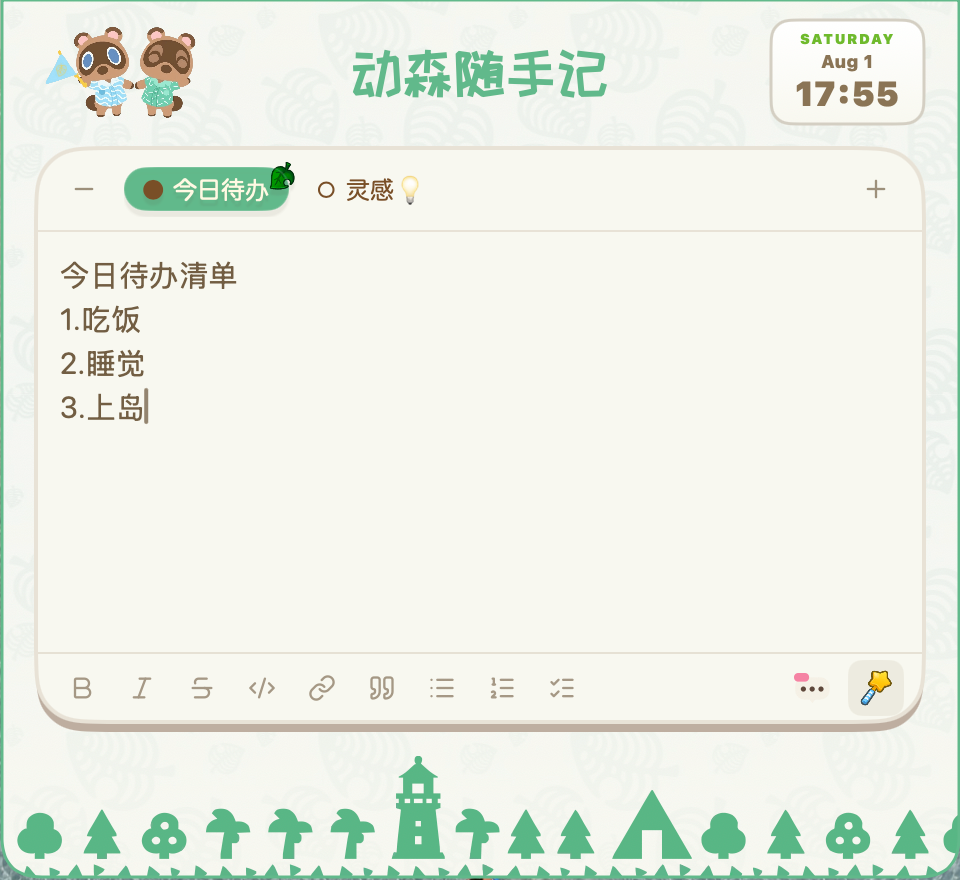
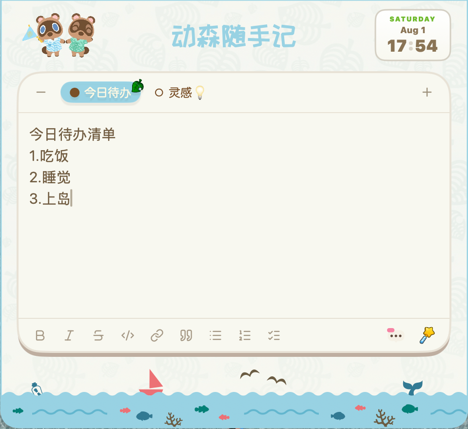
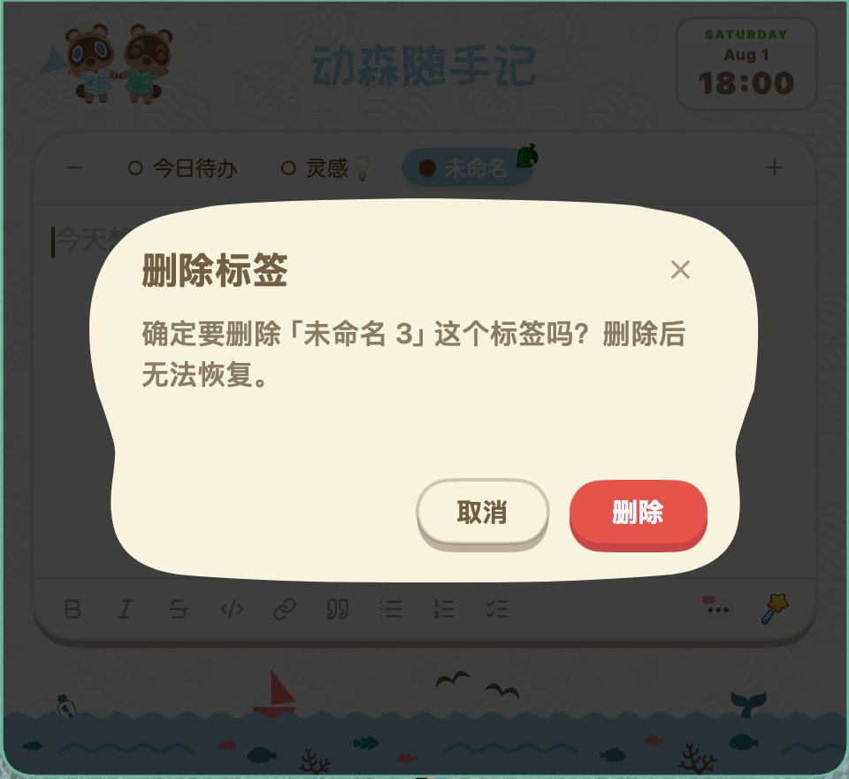
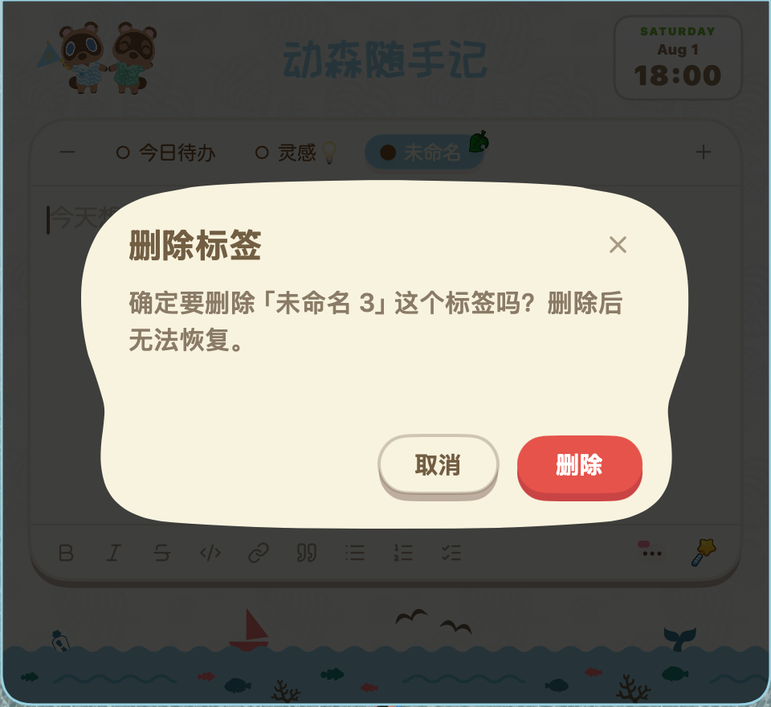

悬浮即记
鼠标滑过屏幕顶部，面板展开即写，不打断正在做的事。
鼠标滑过屏幕顶部，奶油色笔记本展开；记完移开，自动收进刘海。不打断当前应用。
Mac 安装包 / Windows 免装版 · 无需账号 · 数据只存在本机


不占 Dock、不占任务栏，面板只在你需要时出现。
鼠标滑过屏幕顶部，面板展开即写，不打断正在做的事。
标题、粗体、待办、引用实时渲染，数据仍存标准 Markdown。
没有保存按钮，输入自动落盘双副本，退出时强制 flush。
工作、生活、灵感分开记，点击标签即可切换。
sea 海之主题与 tree 森林主题一键切换，边框和标签联动换色。
拖文件到刘海暂存，拖出完成搬运，全程不打开 Finder。
截图后直接粘贴，自动转 PNG 存库并内嵌显示。
按 Esc 快速收起，面板不会抢焦点，也不会挡工作区。
下面这段是应用的真实面板：光标从右下角滑向刘海，奶油色面板展开，记完移开自动收起。
sea 海水淡蓝与 tree 森林绿，都是应用里主题切换时的同款强调色。
误触减号不会直接删除笔记。弹出动森风格确认框，打字机缓缓打出提示，确认才会删除。


没有云端同步，不收集内容，也不要求注册账号。
笔记保存在本机，并保留第二份本地副本，不经过任何服务器。
打开即用，不注册、不登录、不上传任何个人内容。
核心功能离线可用，不收集、不共享、不出售数据。
支持。macOS 版和 Windows 版都使用同一套动森风格面板和双主题。
数据只存在本机，包含主文件与本地副本，不依赖云端。
会。输入停止后自动落盘，不需要手动点击保存按钮。
不会抢焦点。需要时展开，记完或按 Esc 后自动收进屏幕顶部。